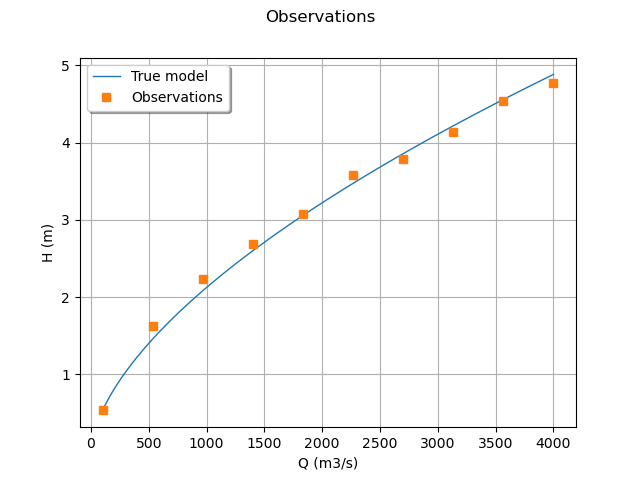

Note
Go to the end to download the full example code
Generate flooding model observations¶
In this example we are interested in the calibration of the flooding model. We show how to produce the observations that we use in the calibration model of Calibration of the flooding model.
In practice, we generally use a data set which has been obtained from measurements. In this example, we generate the data using noisy observations of the physical model. In the next part, we will calibrate the parameters using the calibration algorithms.
Parameters to calibrate¶
The variables to calibrate are  and are set to the following values:
and are set to the following values:
![K_s = 30, \qquad Z_v = 50, \qquad Z_m = 55.]()
This is the set of true values that we wish to estimate with the calibration methods. In practical studies, these values are unknown. In this study, we will simulate noisy observations of the output of the model and estimate the parameters using calibration methods.
Observations¶
In this section, we describe the statistical model associated with the  observations.
The errors of the water heights are associated with a normal distribution
with a zero mean and a standard variation equal to:
observations.
The errors of the water heights are associated with a normal distribution
with a zero mean and a standard variation equal to:

Therefore, the observed water heights are:
![H_i = G(Q_i,K_s,Z_v,Z_m) + \epsilon_i]()
for  where
where

and we make the hypothesis that the observation errors are independent. We consider a sample size equal to:

The observations are the couples  , i.e. each observation is a
couple made of the flowrate and the corresponding river height.
, i.e. each observation is a
couple made of the flowrate and the corresponding river height.
import openturns as ot
import openturns.viewer as otv
import numpy as np
from openturns.usecases import flood_model
Create the flooding model.
def functionFlooding(X):
L = 5.0e3
B = 300.0
Q, K_s, Z_v, Z_m = X
alpha = (Z_m - Z_v) / L
H = (Q / (K_s * B * np.sqrt(alpha))) ** (3.0 / 5.0)
return [H]
g = ot.PythonFunction(4, 1, functionFlooding)
g = ot.MemoizeFunction(g)
g.setInputDescription(["Q (m3/s)", "Ks (m^(1/3)/s)", "Zv (m)", "Zm (m)"])
g.setOutputDescription(["H (m)"])
Print the true values of the parameters.
fm = flood_model.FloodModel()
print("Parameters")
print(" Ks = ", fm.trueKs)
print(" Zv = ", fm.trueZv)
print(" Zm = ", fm.trueZm)
Parameters
Ks = 30.0
Zv = 50.0
Zm = 55.0
Create the parametric function.
calibratedIndices = [1, 2, 3]
thetaTrue = [fm.trueKs, fm.trueZv, fm.trueZm]
mycf = ot.ParametricFunction(g, calibratedIndices, thetaTrue)
Create a regular grid of the flowrates and evaluate the corresponding outputs.
nbobs = 10
minQ = 100.0
maxQ = 4000.0
step = (maxQ - minQ) / (nbobs - 1)
rg = ot.RegularGrid(minQ, step, nbobs)
Qobs = rg.getVertices()
outputH = mycf(Qobs)
Generate the observation noise and add it to the output of the model.
sigmaObservationNoiseH = 0.1 # (m)
noiseH = ot.Normal(0.0, sigmaObservationNoiseH)
sampleNoiseH = noiseH.getSample(nbobs)
Hobs = outputH + sampleNoiseH
Gather the data into a sample.
data = ot.Sample(nbobs, 2)
data[:, 0] = Qobs
data[:, 1] = Hobs
data.setDescription(["Q (m3/s)", "H (m)"])
data
Plot the Y observations versus the X observations.
graph = ot.Graph("Observations", "Q (m3/s)", "H (m)", True)
# Plot the model before calibration
curve = mycf.draw(100.0, 4000.0).getDrawable(0)
curve.setLegend("True model")
curve.setLineStyle(ot.ResourceMap.GetAsString("CalibrationResult-ObservationLineStyle"))
graph.add(curve)
# Plot the noisy observations
cloud = ot.Cloud(Qobs, Hobs)
cloud.setLegend("Observations")
cloud.setPointStyle(
ot.ResourceMap.GetAsString("CalibrationResult-ObservationPointStyle")
)
graph.add(cloud)
#
graph.setColors(ot.Drawable.BuildDefaultPalette(2))
graph.setLegendPosition("topleft")
view = otv.View(graph)

The data which are actually used in Calibration of the flooding model are simplified so that the minimum number of significant digits is printed.
otv.View.ShowAll()